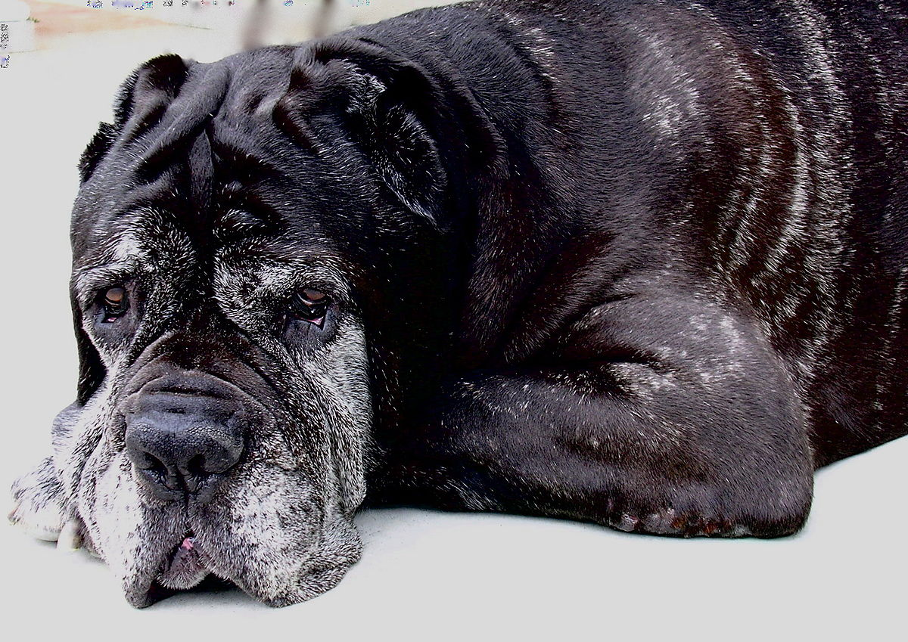

Le Mastiff, majestueuse force tranquille parmi les races canines, incarne la combinaison rare de la puissance imposante et de la douce loyauté. Avec ses traits massifs, une tête imposante, et un corps robuste, le Mastiff impressionne par sa stature imposante.
Originaire de l'Antiquité, le Mastiff a été élevé pour protéger et défendre, faisant de lui un gardien naturel. Cependant, derrière cette apparence intimidante se cache un cœur doux et affectueux. Les Mastiffs sont réputés pour leur tempérament calme, leur attachement profond envers leur famille et leur tolérance, ce qui en fait d'excellents compagnons.
Que ce soit en tant que chien de garde vigilant ou en tant que membre aimant d'une famille, le Mastiff incarne la juxtaposition harmonieuse de la force et de la gentillesse. Son allure imposante dissimule un compagnon dévoué, prêt à offrir affection et protection à ceux qu'il considère comme les siens. Avec son charme doux et son caractère impressionnant, le Mastiff laisse une empreinte indélébile dans le cœur de ceux qui ont la chance de partager leur vie avec cette noble race canine.
